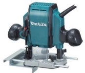

Module presentation
Learn with the slides
Use the presentation to preview Design, drawings and timber technology, then work through the theory, checks and written evidence below.
Project plan and evidence
Use the plan and save evidence
Use the supplied Clock project plan alongside the module, then open the folio when your evidence is ready.
Your work
Student details
Your entries save automatically in this browser. Use Download evidence PDF before leaving the page.
Weeks 15-16
This module
Apply design principles, communicate clearly and compare workshop processes with current technologies.
Theory 1
Applying design principles to the Clock

Design principles help you judge whether the Clock looks resolved and works as intended. They are not decorations added at the end. They guide decisions about the visible face, carcass, chamfered edges, hidden drawer and finished surfaces. A successful design should meet the project brief, operate correctly and appear visually connected as one complete product.
Proportion describes how the sizes of parts relate to each other and to the whole Clock. The visible face should appear suitably placed within the carcass, while the carcass, chamfers and drawer should not look unusually heavy, weak or disconnected. Proportion must be judged from the approved drawing and completed form rather than from guesswork.
Balance is the visual and physical sense of stability. The Clock should appear settled when viewed from the front and from different angles. The location of the face, the surrounding timber and the alignment of the hidden drawer all affect balance. Emphasis identifies the main point of attention. In this project, the visible clock face is an important feature, so surrounding details should support it rather than compete with it.
Unity means the parts appear to belong together. Consistent workmanship, aligned components, controlled chamfers and an even finish help connect the carcass, face and drawer. Contrast occurs where differences make features easier to recognise. For example, changes between flat surfaces, edges, openings and shadow lines can give the form definition without requiring extra decoration. Contrast should remain controlled so that the Clock does not look visually confused.
Function is essential. The Clock must stand securely, display the face clearly, allow the battery mechanism to operate and include a functional hidden drawer. An attractive feature is unsuccessful if it interferes with fit, movement, strength, safety or access.
Use this process when considering an approved variation:
- Identify the reason for the proposed change.
- Check that all non-negotiable project features remain unchanged.
- Explain which design principle the change improves.
- Consider its effect on function, material use, construction accuracy and finish quality.
- Compare the proposal with the brief and approved drawing.
- Seek teacher approval before altering the planned design or beginning related workshop work.
A variation should solve a clear design problem or improve the product in a justified way. Personal preference alone is not enough. Record the decision, the reason for it and how it still satisfies the assessment requirements.
Theory 2
Technical sketches, orthographic views and clear communication
Technical drawings help you communicate what the Clock should look like, how its parts relate to one another and what must be checked during construction. A freehand concept sketch is useful at the beginning because it records an idea quickly. It can show the general form of the visible face, carcass, chamfered edges and hidden drawer without needing to be perfectly ruled. Labels and short annotations should explain important features, design intentions or areas that need teacher approval.
Orthographic drawing communicates shape more accurately by showing separate flat views of an object. The supplied Clock drawing uses third-angle projection, so the views are arranged according to that drawing convention. Use only the views that are actually provided. Do not invent missing details or assume that a feature continues through the project unless the drawing, approved cutting information or teacher direction confirms it.
The drawing includes written dimensions in millimetres and a scale note of 1:3. However, it also states DO NOT SCALE DRAWING. This means you must not measure the printed or displayed image and multiply the result to calculate a project size. Printing, copying or screen display can alter the drawing. Always use the written dimensions and teacher-approved information. If a required measurement is unclear or not shown, stop and ask rather than guessing.
Use the following communication process throughout the Clock project:
- Sketch the idea: record the proposed form and label the main visible features.
- Read the approved drawing: identify the projection method, written dimensions, scale note and drawing warnings.
- Connect views: compare matching edges and features across the supplied orthographic views.
- Add clear annotations: explain material calculations, intended appearance, quality checks or teacher-approved decisions.
- Record approved changes: update the sketch or drawing with the change, reason, date and teacher approval.
- Collect as-built evidence: use labelled photographs or updated sketches to show how the completed Clock compares with the approved information.
As-built evidence is especially important when the finished project differs from the original drawing. It should not hide mistakes or present an unapproved alteration as intentional. Clearly record what changed, why it changed and how the revised result still meets the brief. Graphical evidence and written explanation should support each other so another person can understand the project without relying on memory.
Theory 3
Current and emerging timber technologies connected to the Clock

Timber products can be planned and manufactured using hand processes, digital technologies or a combination of both. For the Clock, traditional methods may include freehand sketches, written measurements, careful marking and checking components against an approved drawing. Contemporary workplaces may use computer-aided design software, digital measuring equipment, spreadsheets and computer-controlled machinery. These technologies can improve some parts of production, but newer does not automatically mean better.
A freehand concept sketch is quick, flexible and useful for exploring ideas. A computer-aided drawing can produce neat lines, repeated views and accurate dimension placement, but it still depends on correct information being entered. A detailed digital drawing is not useful if the measurements are wrong or the design does not meet the brief. In the same way, spreadsheets can calculate quantities and costs efficiently, but incorrect dimensions, formulas or prices will produce an incorrect result.
Hand measuring and marking develop important skills such as reading a rule, identifying a datum and checking alignment. Digital measuring devices may provide a fast numerical reading, but they must be used correctly and checked against the required level of accuracy. Students and workers still need to understand what is being measured, why it matters and whether the result is reasonable.
In industry, rebates, profiles or repeated components may be produced using powered or computer-controlled equipment. These methods can improve consistency and reduce production time when many identical items are required. However, setup, programming, guarding, supervision and maintenance are essential. The actual method used for the Clock must follow the teacher-approved process, the school Safe Operating Procedure and the equipment available in the workshop.
When comparing a traditional process with a contemporary technology, consider:
- Accuracy: Does the method produce a reliable result, and how will it be checked?
- Safety: What hazards, controls, training and supervision are required?
- Waste: Does the method reduce mistakes and make efficient use of material?
- Skill: Does it build understanding, or only complete the task faster?
- Access: Is the technology affordable, available and suitable for the number of products being made?
A skilled maker chooses technology to suit the job. A hand process may be best for a one-off adjustment, while a digital or automated method may suit accurate repetition. The strongest approach often combines careful human judgement with appropriate technology.
Guided practice
Weeks 15-16 knowledge checks
Choose an answer, check it and use the progressive hints and feedback to improve.
Apply your learning
Scaffolded written responses
Write first, use the feedback prompts, then compare your reasoning with the appropriate response example.
Finish the two-week block
Save your evidence
Your work saves in this browser, but browser storage is not the official submission. Download the module evidence PDF before changing devices or clearing browser data.
No marks, answers or personal information are sent from this webpage.